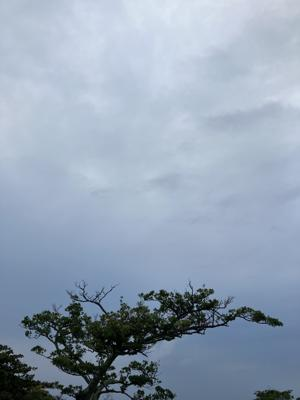
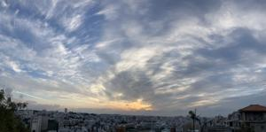

うるがいの話 ある日
最新: 戻ってきた液晶テレビ【うるがいの話 ある日】とは 一日だけのプログです
『うるがいの話』の最新一日だけのプログで、通信料が少なく経済的だ。カニの画像をクリックすると全ての日付が載る『うるがいの話』サイトを表示します
|
|
【うるがいの話】 うるがい(ｳﾙｶﾞｲ urugai)とは、『もずくがに』の名前でとても大きくなります。 |
|---|---|
|
|
【カミマヤーの話】 猫のことを方言でマヤーといいます。カミマヤー（kamimayaa）とは、神の猫のことです。 |
|
【たながぁの音楽】 たながぁ（ﾀﾅｶﾞｰ tanagaa）とは手長えびのことで、何種類かあり大きいのは車 エビぐらいになります。 |

|
【ぶながぁの話】 ぶながぁ(ﾌﾞﾅｶﾞｰ bunagaa)とは、赤い髪の毛、赤い身体、そして身長は１ｍ２０ｃｍ ぐらい、川の蟹を食べているの目撃された。場所は沖縄県国頭郡大宜味村のと ある村僕の隣近所に住んでいる爺さんから、聞いた話です。 |
|
|
【ギーマの話】 ギーマ(giima)とは、山原の里山に咲くスズランに似た、 花を付けます。実は食べられます、 気が付くと口の周りが紫になっています。 |
2023年12月29日 (金）戻ってきた液晶テレビ
14:49

『あ、ここ（店舗）で動作確認をお願いします、修理にだす前にここで画面が
チラチラしたのを店員と確認したうえで、修理を出したのに家に持って帰った
後で直っていなかったら、移動で問題があったことになるので』、そうですね
こちらとしてもその方がいいと思います。修理の窓口で液晶テレビの受取の手
続きを勧める店員に、待ったをかけた。店舗は買い物客で混雑している、がや
らねばと２０分ほど、店員さんゴソゴソ、無事映像が映ることを確認した。た
まには、あるんですね、私も故障しているけど検査の工場では、何もないとい
うことを経験しています。ウンウン、たまにそういうことあります、困ったこ
とに。受取で何らかの支払いがあると構えていたが、サインだけで済んだ。し
かし、運がいいのか悪いのか。仮に本当に部品の交換が発生していたら・・・
と思うと、運がいいのかもと考えることにする。

昨日の夜、ふとメールを確認すると、とある会社からメールが届いていた。年
末なので、年明けにと連絡があった。オッ、業務していたんだ。
１４時２５分 ビットコインの総資産 ￥１７、４８６（↓１６６）